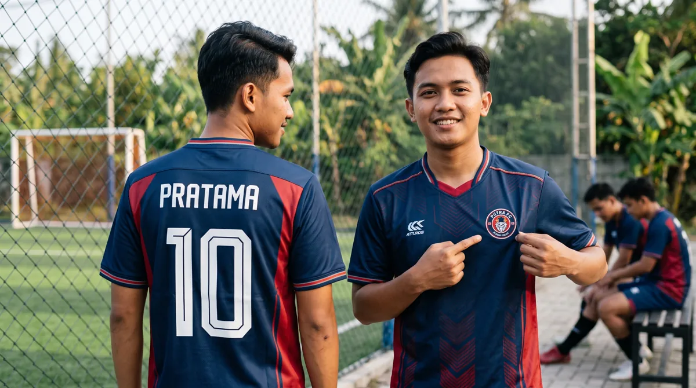

Desain jersey yang bagus bukan hanya menarik di mockup, tetapi juga mudah dibaca dan konsisten saat dikenakan satu tim. Artikel ini membahas aspek yang perlu diperiksa agar keputusan Anda lebih tepat, baik untuk seragam komunitas, tim olahraga, sekolah, maupun kebutuhan acara.
Dalam memilih layanan jersey printing, sebaiknya pertimbangkan bukan hanya tampilan desain, tetapi juga fungsi bahan, ketepatan ukuran, dan kesiapan data pesanan. Untuk gambaran menyeluruh, baca panduan printing jersey Bandung.
Bangun hierarki visual
Tentukan warna utama, warna pendamping, dan ruang untuk logo tim. Hindari terlalu banyak detail kecil yang justru hilang ketika dilihat dari jauh.
Untuk memperjelas keputusan sebelum produksi, lihat juga persiapan file desain jersey. Informasi tersebut membantu menyesuaikan pilihan dengan kebutuhan tim dan kesiapan pesanan.
Pastikan nama dan nomor terbaca
Gunakan kontras cukup antara angka dan latar. Periksa ukuran font, posisi nomor, serta kemungkinan motif bertabrakan dengan identitas pemain.

Jika ingin memeriksa detail yang berkaitan, baca cara kerja printing jersey sublimasi. Informasi tersebut membantu menyesuaikan pilihan dengan kebutuhan tim dan kesiapan pesanan.
Sesuaikan desain dengan cabang olahraga
Pertimbangkan model kerah, potongan lengan, dan kebutuhan gerak pada badminton, futsal, padel, atau lari. Diskusikan batasan produksi sebelum menyetujui detail yang rumit.
Sebagai langkah lanjutan yang praktis, gunakan panduan panduan ukuran jersey custom. Informasi tersebut membantu menyesuaikan pilihan dengan kebutuhan tim dan kesiapan pesanan.
Membangun identitas visual tim
Pilih warna utama dan aksen
Gunakan palet yang cukup kontras agar nomor dan sponsor terbaca. Cek kombinasi pada pencahayaan terang maupun redup.
Tentukan hirarki logo
Prioritaskan logo tim, nomor, nama, dan sponsor. Jangan memberi semua elemen ukuran yang sama karena desain menjadi sulit dibaca.
Gunakan motif seperlunya
Motif geometris atau gradasi dapat memperkuat karakter tim, tetapi area nomor dan nama perlu ruang visual yang cukup.
Memeriksa desain sebelum produksi
Uji keterbacaan dari jauh
Perkecil tampilan mockup untuk meniru jarak pandang. Nomor dan nama seharusnya tetap terbaca.
Perhatikan sambungan panel
Motif yang melewati sisi badan dan lengan mungkin bergeser saat dijahit. Rencanakan toleransi sejak tahap desain.
Lihat mockup pada bentuk jersey
Mockup datar berguna untuk detail, tetapi simulasi bentuk jersey membantu menilai proporsi elemen pada tubuh.
Kolaborasi desain untuk banyak anggota
Kumpulkan satu putaran masukan
Tunjuk satu penanggung jawab agar revisi tidak saling bertentangan.
Kunci identitas sebelum personalisasi
Setelah warna, motif, dan logo disetujui, baru masukkan nama serta nomor untuk mengurangi pekerjaan ulang.
Langkah praktis sebelum menentukan pilihan
Gunakan panduan ini sebagai titik awal, lalu sesuaikan dengan aktivitas, anggaran, kebutuhan desain, dan jumlah anggota tim. Jika terdapat spesifikasi khusus, komunikasikan sejak awal agar solusi yang ditawarkan tidak hanya terlihat menarik di gambar tetapi juga sesuai saat digunakan.
Untuk kebutuhan produksi di Bandung, pelajari juga panduan printing jersey Bandung yang menjelaskan pilihan bahan, teknik sublimasi, serta alur pemesanan. Anda juga dapat mengenal layanan jersey printing dari Zipzip dan mendiskusikan detail proyek secara langsung.
Membuat desain yang tetap terbaca saat bergerak
Pilih warna dasar yang membedakan tim dari lawan dan pastikan nomor punggung memiliki kontras kuat. Grafis yang menarik saat dilihat dekat belum tentu mudah dibaca dari tribun atau dalam foto pertandingan.
Tempatkan sponsor dan logo dengan ruang kosong yang cukup agar tidak berbenturan dengan lipatan kain atau jahitan. Uji desain pada ukuran terkecil karena proporsi elemen dapat terasa berbeda dibanding mockup ukuran besar.
Sebelum disetujui, lihat mockup depan-belakang secara berdampingan dan periksa kembali ejaan nama, angka, serta konsistensi posisi identitas tim.
Untuk membandingkan pilihan secara menyeluruh, baca panduan printing jersey Bandung dan lihat layanan jersey printing Zipzip.
Tentukan identitas sebelum memilih motif
Mulailah dengan dua atau tiga karakter yang ingin ditampilkan tim: energik, minimalis, agresif, atau elegan. Pilih palet warna utama dan aksen yang mudah dikenali. Jangan menggabungkan terlalu banyak motif hanya karena semuanya terlihat menarik di layar. Perhatikan warna yang sudah dipakai klub, sponsor, dan nomor punggung. Desain yang konsisten akan lebih mudah diterapkan pada jersey kandang, tandang, dan kebutuhan komunitas berikutnya.
Kontras nomor punggung dan latar
Nomor pemain harus tetap terbaca ketika dilihat dari jauh atau saat pemain bergerak. Gunakan warna yang cukup kontras terhadap latar, hindari font terlalu tipis, dan jangan menempatkan angka di atas motif yang sangat ramai. Uji mockup dalam ukuran kecil di layar untuk mensimulasikan jarak pandang. Jika nomor memakai outline, pastikan garisnya tidak hilang ketika dicetak. Kebutuhan turnamen dapat memiliki aturan khusus mengenai ukuran dan penempatan nomor.
Atur hierarki logo dan sponsor
Logo tim biasanya menjadi elemen identitas utama, sedangkan sponsor perlu tetap terbaca tanpa mengalahkan keseluruhan komposisi. Tentukan area dada kiri, tengah, lengan, atau belakang berdasarkan prioritas dan perjanjian sponsor. Jangan menaruh logo terlalu dekat jahitan atau lipatan. Minta file logo resolusi tinggi, idealnya vektor, supaya tepi tetap tajam. Periksa versi satu warna jika logo harus dipasang di atas latar yang kontrasnya rendah.
Pola grafis perlu mengikuti bentuk tubuh
Garis diagonal, blok warna, dan gradasi dapat memperkuat kesan dinamis, tetapi harus dilihat pada pola jersey yang nyata. Motif yang bagus pada bidang datar bisa tampak terputus di sisi badan atau bahu setelah dijahit. Gunakan mockup depan, belakang, dan samping, lalu cek transisi ke lengan. Hindari menempatkan detail penting di ketiak atau sambungan. Untuk full printing, diskusikan toleransi pertemuan motif sebelum file dikunci.
Libatkan anggota tim tanpa revisi tak berujung
Kumpulkan masukan melalui satu koordinator dan tentukan batas jumlah opsi desain. Minta anggota menilai aspek spesifik: warna, keterbacaan, kenyamanan visual, dan penempatan logo. Hindari polling yang mencampur perubahan kecil dengan pergantian konsep total. Setelah desain dipilih, simpan file versi final beserta daftar nama dan nomor. Alur ini membuat keputusan lebih cepat dan mencegah konflik instruksi menjelang produksi.
Bedakan jersey pertandingan dan jersey komunitas
Jersey pertandingan sering memerlukan nomor jelas, potongan yang mendukung gerak, dan warna yang sesuai aturan kompetisi. Jersey komunitas untuk gathering dapat memberi ruang lebih besar pada ilustrasi dan pesan visual. Bila satu desain akan dipakai untuk keduanya, cari titik temu pada identitas warna dan pola dasar. Tanyakan kebutuhan penggunaan sejak awal agar desain tidak hanya dinilai dari estetika.
Uji desain dalam ukuran nyata
Cetak mockup pada kertas skala mendekati aslinya atau minta proof bila tersedia. Periksa apakah teks kecil, garis tipis, dan logo masih terbaca. Simulasikan warna pada kain yang akan digunakan, karena hasil layar tidak selalu sama dengan hasil sublimasi. Lihat desain di bawah cahaya terang dan normal. Jika ada elemen personalisasi, uji nama terpanjang agar tidak melewati area aman.
Siapkan file produksi dengan rapi
Serahkan file yang sesuai template panel vendor, pisahkan elemen logo, dan pastikan data nama serta nomor telah diperiksa. Jangan hanya mengirim screenshot mockup dari aplikasi chat. Simpan versi final dan catatan warna yang disepakati. Untuk langkah teknis selanjutnya, gunakan panduan menyiapkan file desain jersey agar proses dari konsep ke cetak lebih lancar.
Pertanyaan yang sering muncul
Tentukan identitas sebelum memilih motif?
Mulailah dengan dua atau tiga karakter yang ingin ditampilkan tim: energik, minimalis, agresif, atau elegan. Pilih palet warna utama dan aksen yang mudah dikenali.
Kontras nomor punggung dan latar?
Nomor pemain harus tetap terbaca ketika dilihat dari jauh atau saat pemain bergerak. Gunakan warna yang cukup kontras terhadap latar, hindari font terlalu tipis, dan jangan menempatkan angka di atas motif yang sangat ramai.
Atur hierarki logo dan sponsor?
Logo tim biasanya menjadi elemen identitas utama, sedangkan sponsor perlu tetap terbaca tanpa mengalahkan keseluruhan komposisi. Tentukan area dada kiri, tengah, lengan, atau belakang berdasarkan prioritas dan perjanjian sponsor.
Artikel terkait yang dapat membantu
- Cara Menyiapkan File Desain Jersey Printing agar Hasil Rapi
- Jersey Custom Desain Sendiri Bandung
- Checklist Persiapan Pesan Jersey Custom untuk Tim dan Komunitas
Masih ada pertanyaan tentang spesifikasi atau kebutuhan tim? Hubungi Zipzip untuk membahas opsi yang sesuai dengan desain dan jadwal Anda.
Bacaan lanjutan untuk perencanaan jersey
Tahap berikutnya bisa dipelajari melalui panduan yang saling melengkapi berikut.